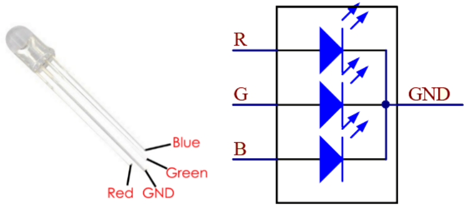

Note
Bonjour et bienvenue dans la communauté SunFounder Raspberry Pi & Arduino & ESP32 Enthusiasts sur Facebook ! Plongez plus profondément dans l’univers de Raspberry Pi, Arduino et ESP32 avec d’autres passionnés.
Pourquoi nous rejoindre ?
Support d’experts : Résolvez vos problèmes après-vente et vos défis techniques avec l’aide de notre communauté et de notre équipe.
Apprenez et partagez : Échangez des astuces et des tutoriels pour améliorer vos compétences.
Aperçus exclusifs : Profitez d’un accès anticipé aux annonces de nouveaux produits et aux avant-premières.
Réductions exclusives : Bénéficiez de réductions sur nos derniers produits.
Promotions festives et cadeaux : Participez à des promotions et à des cadeaux lors des fêtes.
👉 Prêt à explorer et à créer avec nous ? Cliquez sur [Ici] et rejoignez-nous dès aujourd’hui !
1.1.2 RGB LED
Introduction
Dans cette leçon, nous allons apprendre à contrôler une LED RVB pour afficher différentes couleurs.
Composants

Principe
PWM
Le Pulse Width Modulation (PWM) est une technique permettant d’obtenir des résultats analogiques à partir de moyens numériques. Le contrôle numérique crée une onde carrée, un signal alternant entre allumé et éteint. Ce motif allumé-éteint peut simuler des tensions intermédiaires entre complètement allumé (5 Volts) et éteint
(0 Volts) en changeant la durée pendant laquelle le signal reste allumé par rapport à la durée pendant laquelle il est éteint. La durée pendant laquelle le signal est actif est appelée largeur d’impulsion. Pour obtenir des valeurs analogiques variables, vous modifiez cette largeur. Si vous répétez ce motif assez rapidement, par exemple avec une LED, le résultat sera une tension stable entre 0 et 5V contrôlant la luminosité de la LED.
Cycle de service
Le cycle de service est le pourcentage d’une période pendant laquelle un signal est actif. Une période est le temps nécessaire pour compléter un cycle allumé-éteint. En formule, un cycle de service peut s’exprimer comme suit :

Où D représente le cycle de service, T est le temps où le signal est actif, et P est la période totale du signal. Ainsi, un cycle de service de 60 % signifie que le signal est actif pendant 60 % du temps, et inactif 40 % du temps.

LED RVB
{kind=link}
Les trois couleurs primaires de la LED RVB peuvent être combinées en différentes couleurs en ajustant leur luminosité. La luminosité de chaque LED peut être ajustée via le PWM. Le Raspberry Pi n’a qu’un canal pour la sortie PWM matérielle, mais il en faut trois pour contrôler la LED RVB. Heureusement, la bibliothèque softPwm simule le PWM par programmation. Il vous suffit d’inclure le fichier d’en-tête softPwm.h (pour les utilisateurs du langage C), puis d’appeler les API fournies pour contrôler facilement la LED RVB via plusieurs canaux de sortie PWM, ce qui permet d’afficher toutes sortes de couleurs.
Schéma de câblage
Après avoir connecté les broches R, G et B à une résistance de limitation de courant, connectez-les respectivement aux GPIO17, GPIO18 et GPIO27. La broche la plus longue de la LED (GND) se connecte au GND du Raspberry Pi. Lorsque les trois broches reçoivent des valeurs PWM différentes, la LED RVB affiche différentes couleurs.
T-Board Name |
physical |
wiringPi |
BCM |
GPIO17 |
Pin 11 |
0 |
17 |
GPIO18 |
Pin 12 |
1 |
18 |
GPIO27 |
Pin 13 |
2 |
27 |

Procédures expérimentales
Étape 1 : Construisez le circuit.

Pour les utilisateurs du langage C
Étape 2 : Accédez au dossier du code.
cd ~/davinci-kit-for-raspberry-pi/c/1.1.2/
Étape 3 : Compilez le code.
gcc 1.1.2_rgbLed.c -lwiringPi
Note
Lorsque la commande « gcc » est exécutée, si l’option « -o » n’est pas appelée, le fichier exécutable sera nommé « a.out ».
Étape 4 : Exécutez le fichier exécutable.
sudo ./a.out
Après l’exécution du code, vous verrez que la LED RVB affiche les couleurs rouge, verte, bleue, jaune, rose et cyan.
Note
Si cela ne fonctionne pas après l’exécution, ou s’il y a un message d’erreur comme « wiringPi.h: No such file or directory », veuillez consulter C code is not working?.
Code
#include <wiringPi.h>
#include <softPwm.h>
#include <stdio.h>
#define uchar unsigned char
#define LedPinRed 0
#define LedPinGreen 1
#define LedPinBlue 2
void ledInit(void){
softPwmCreate(LedPinRed, 0, 100);
softPwmCreate(LedPinGreen,0, 100);
softPwmCreate(LedPinBlue, 0, 100);
}
void ledColorSet(uchar r_val, uchar g_val, uchar b_val){
softPwmWrite(LedPinRed, r_val);
softPwmWrite(LedPinGreen, g_val);
softPwmWrite(LedPinBlue, b_val);
}
int main(void){
if(wiringPiSetup() == -1){ // Si l'initialisation de wiring échoue, afficher un message à l'écran
printf("setup wiringPi failed !");
return 1;
}
ledInit();
while(1){
printf("Red\n");
ledColorSet(0xff,0x00,0x00); //red
delay(500);
printf("Green\n");
ledColorSet(0x00,0xff,0x00); //green
delay(500);
printf("Blue\n");
ledColorSet(0x00,0x00,0xff); //blue
delay(500);
printf("Yellow\n");
ledColorSet(0xff,0xff,0x00); //yellow
delay(500);
printf("Purple\n");
ledColorSet(0xff,0x00,0xff); //purple
delay(500);
printf("Cyan\n");
ledColorSet(0xc0,0xff,0x3e); //cyan
delay(500);
}
return 0;
}
Explication du code
#include <softPwm.h>
Bibliothèque utilisée pour réaliser la fonction PWM par logiciel.
void ledInit(void){
softPwmCreate(LedPinRed, 0, 100);
softPwmCreate(LedPinGreen,0, 100);
softPwmCreate(LedPinBlue, 0, 100);
}
Cette fonction utilise le logiciel pour créer une broche PWM et définit sa période entre 100us et 10000us.
Le prototype de la fonction softPwmCreate(LedPinRed, 0, 100) est le suivant :
int softPwmCreate(int pin, int initialValue, int pwmRange);
Paramètre pin : Toute broche GPIO du Raspberry Pi peut être définie comme broche PWM.
Paramètre initialValue : La largeur d’impulsion initiale est initialValue multiplié par 100us.
Paramètre pwmRange : La période du PWM est pwmRange multiplié par 100us.
void ledColorSet(uchar r_val, uchar g_val, uchar b_val){
softPwmWrite(LedPinRed, r_val);
softPwmWrite(LedPinGreen, g_val);
softPwmWrite(LedPinBlue, b_val);
}
Cette fonction permet de définir les couleurs de la LED. En utilisant le modèle RVB, le paramètre formel r_val représente l’intensité du rouge, g_val celle du vert et b_val celle du bleu.
Le prototype de la fonction softPwmWrite(LedPinBlue, b_val) est le suivant :
void softPwmWrite (int pin, int value) ;
Paramètre pin : Toute broche GPIO du Raspberry Pi peut être définie comme broche PWM.
Paramètre value : La largeur d’impulsion du PWM est value multiplié par 100us. Notez que la valeur doit être inférieure à pwmRange défini précédemment ; si elle est supérieure, elle sera limitée à pwmRange.
ledColorSet(0xff,0x00,0x00);
Appelle la fonction définie précédemment. Écrire 0xff dans LedPinRed et 0x00 dans LedPinGreen et LedPinBlue. Seule la LED rouge s’allume après l’exécution de ce code. Si vous souhaitez allumer des LED d’autres couleurs, il suffit de modifier les paramètres.
Pour les utilisateurs du langage Python
Étape 2 : Ouvrez le fichier de code.
cd ~/davinci-kit-for-raspberry-pi/python
Étape 3 : Exécutez.
sudo python3 1.1.2_rgbLed.py
Après l’exécution du code, vous verrez que la LED RVB affiche les couleurs rouge, verte, bleue, jaune, rose et cyan.
Code
Note
Vous pouvez Modifier/Réinitialiser/Copier/Exécuter/Arrêter le code ci-dessous. Mais avant cela, vous devez accéder au chemin du code source tel que davinci-kit-for-raspberry-pi/python.
import RPi.GPIO as GPIO
import time
# Définir une table de couleurs en Hexadécimal
COLOR = [0xFF0000, 0x00FF00, 0x0000FF, 0xFFFF00, 0xFF00FF, 0x00FFFF]
# Définir les broches via un dictionnaire
pins = {'Red':17, 'Green':18, 'Blue':27}
def setup():
global p_R, p_G, p_B
# Définir les modes GPIO sur la numérotation BCM
GPIO.setmode(GPIO.BCM)
# Définir tous les modes LedPin sur la sortie et le niveau initial à High (3,3 V)
for i in pins:
GPIO.setup(pins[i], GPIO.OUT, initial=GPIO.HIGH)
# Définir tous les LED en tant que canal PWM avec une fréquence de 2 kHz
p_R = GPIO.PWM(pins['Red'], 2000)
p_G = GPIO.PWM(pins['Green'], 2000)
p_B = GPIO.PWM(pins['Blue'], 2000)
# Initialiser toutes les LED avec une valeur de 0
p_R.start(0)
p_G.start(0)
p_B.start(0)
# Définir une fonction MAP pour mapper les valeurs. Par exemple de 0~255 à 0~100
def MAP(x, in_min, in_max, out_min, out_max):
return (x - in_min) * (out_max - out_min) / (in_max - in_min) + out_min
# Définir une fonction pour configurer les couleurs
# l'entrée doit être en hexadécimal avec des valeurs pour rouge, bleu et vert.
def setColor(color):
# Configure la luminosité des trois LED en fonction de la valeur de couleur donnée.
# Décomposer les couleurs à partir de la variable 'color'
R_val = (color & 0xFF0000) >> 16
G_val = (color & 0x00FF00) >> 8
B_val = (color & 0x0000FF) >> 0
# Ces lignes analysent la variable de couleur en attribuant les deux premières valeurs au rouge,
# les deux du milieu au vert, et les deux dernières au bleu (opérations de décalage).
# Mapper les valeurs de couleur de 0~255 à 0~100
R_val = MAP(R_val, 0, 255, 0, 100)
G_val = MAP(G_val, 0, 255, 0, 100)
B_val = MAP(B_val, 0, 255, 0, 100)
# Changer les couleurs
p_R.ChangeDutyCycle(R_val)
# Assigner la valeur mappée du cycle de service au canal PWM correspondant pour changer la luminosité.
p_G.ChangeDutyCycle(G_val)
p_B.ChangeDutyCycle(B_val)
print ("color_msg: R_val = %s, G_val = %s, B_val = %s"%(R_val, G_val, B_val))
def main():
while True:
for color in COLOR: # Affecter chaque élément de la liste COLOR respectivement et changer la couleur de la LED RVB via la fonction setColor().
setColor(color) # Changer la couleur de la LED RVB
time.sleep(0.5) # Fixer un délai de 0,5s après chaque changement de couleur. Modifier ce paramètre modifie la vitesse de changement des couleurs de la LED.
def destroy():
# Arrêter tous les canaux PWM
p_R.stop()
p_G.stop()
p_B.stop()
# Libérer les ressources
GPIO.cleanup()
# Si ce script est exécuté directement, faire :
if __name__ == '__main__':
setup()
try:
main()
# Lorsque 'Ctrl+C' est pressé, la fonction destroy() sera exécutée.
except KeyboardInterrupt:
destroy()
Explication du code
p_R = GPIO.PWM(pins['Red'], 2000)
p_G = GPIO.PWM(pins['Green'], 2000)
p_B = GPIO.PWM(pins['Blue'], 2000)
p_R.start(0)
p_G.start(0)
p_B.start(0)
Appeler la fonction GPIO.PWM() pour définir les broches Rouge, Vert et Bleu en tant que broches PWM et fixer la fréquence à 2000 Hz. Ensuite, utiliser la fonction Start() pour définir le cycle de service initial à zéro.
def MAP(x, in_min, in_max, out_min, out_max):
return (x - in_min) * (out_max - out_min) / (in_max - in_min) + out_min
Définir une fonction MAP pour mapper les valeurs. Par exemple, si x=50, in_min=0, in_max=255, out_min=0, out_max=100, la fonction renverra 19,6.
def setColor(color):
R_val = (color & 0xFF0000) >> 16
G_val = (color & 0x00FF00) >> 8
B_val = (color & 0x0000FF) >> 0
Configurer la luminosité des trois LED avec la valeur de couleur donnée. Par exemple, si color=0xFF00FF, R_val=（0xFF00FF & 0xFF0000）>> 16 = 0xFF, G_val = 0x00, B_val=0xFF.
R_val = MAP(R_val, 0, 255, 0, 100)
G_val = MAP(G_val, 0, 255, 0, 100)
B_val = MAP(B_val, 0, 255, 0, 100)
Utiliser la fonction MAP pour convertir les valeurs RVB entre 0~255 en une plage de cycle de service PWM de 0 à 100.
p_R.ChangeDutyCycle(R_val)
p_G.ChangeDutyCycle(G_val)
p_B.ChangeDutyCycle(B_val)
Affecter la valeur mappée du cycle de service au canal PWM correspondant pour changer la luminosité.
for color in COLOR:
setColor(color)
time.sleep(0.5)
Affecter chaque élément de la liste COLOR à la variable color et changer la couleur de la LED RVB via la fonction setColor().